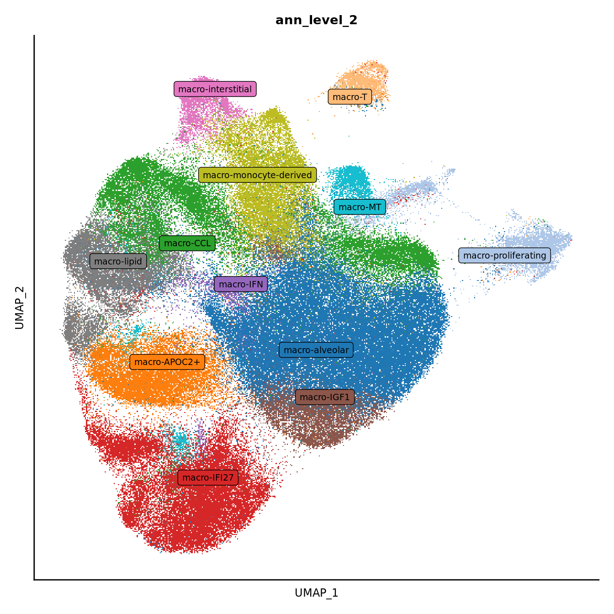

Annotate Macrophage clusters
Jovana Maksimovic
June 28, 2024
Last updated: 2024-06-28
Checks: 7 0
Knit directory: paed-inflammation-CITEseq/
This reproducible R Markdown analysis was created with workflowr (version 1.7.1). The Checks tab describes the reproducibility checks that were applied when the results were created. The Past versions tab lists the development history.
Great! Since the R Markdown file has been committed to the Git repository, you know the exact version of the code that produced these results.
Great job! The global environment was empty. Objects defined in the global environment can affect the analysis in your R Markdown file in unknown ways. For reproduciblity it’s best to always run the code in an empty environment.
The command set.seed(20240216) was run prior to running
the code in the R Markdown file. Setting a seed ensures that any results
that rely on randomness, e.g. subsampling or permutations, are
reproducible.
Great job! Recording the operating system, R version, and package versions is critical for reproducibility.
Nice! There were no cached chunks for this analysis, so you can be confident that you successfully produced the results during this run.
Great job! Using relative paths to the files within your workflowr project makes it easier to run your code on other machines.
Great! You are using Git for version control. Tracking code development and connecting the code version to the results is critical for reproducibility.
The results in this page were generated with repository version ff98580. See the Past versions tab to see a history of the changes made to the R Markdown and HTML files.
Note that you need to be careful to ensure that all relevant files for
the analysis have been committed to Git prior to generating the results
(you can use wflow_publish or
wflow_git_commit). workflowr only checks the R Markdown
file, but you know if there are other scripts or data files that it
depends on. Below is the status of the Git repository when the results
were generated:
Ignored files:
Ignored: .Rhistory
Ignored: .Rproj.user/
Ignored: analysis/figure/
Ignored: data/C133_Neeland_batch1/
Ignored: data/C133_Neeland_merged/
Ignored: renv/library/
Ignored: renv/staging/
Unstaged changes:
Modified: analysis/09.0_integrate_cluster_macro_cells.Rmd
Modified: data/cluster_annotations/seurat_markers_macrophages.rds
Note that any generated files, e.g. HTML, png, CSS, etc., are not included in this status report because it is ok for generated content to have uncommitted changes.
These are the previous versions of the repository in which changes were
made to the R Markdown
(analysis/10.0_manual_annotations_macro_cells.Rmd) and HTML
(docs/10.0_manual_annotations_macro_cells.html) files. If
you’ve configured a remote Git repository (see
?wflow_git_remote), click on the hyperlinks in the table
below to view the files as they were in that past version.
| File | Version | Author | Date | Message |
|---|---|---|---|---|
| Rmd | ff98580 | Jovana Maksimovic | 2024-06-28 | wflow_publish("analysis/10.0_manual_annotations_macro_cells.Rmd") |
| Rmd | a4db7cf | Jovana Maksimovic | 2024-06-26 | Update code for adding manual annotations to macrophages without ambient correction |
Load libraries
Load Data
ambient <- ""
out <- here("data",
"C133_Neeland_merged",
glue("C133_Neeland_full_clean{ambient}_integrated_clustered_macrophages.SEU.rds"))
seuInt <- readRDS(file = out)
seuIntAn object of class Seurat
46108 features across 165553 samples within 5 assays
Active assay: integrated (3000 features, 2870 variable features)
4 other assays present: RNA, ADT, ADT.dsb, SCT
2 dimensional reductions calculated: pca, umapUpdate group labels
seuInt@meta.data %>%
data.frame %>%
mutate(Status = ifelse(str_detect(Treatment, "ivacaftor"),
"CF ivacaftor",
ifelse(str_detect(Treatment, "orkambi"),
"CF lumacaftor-ivacaftor",
ifelse(Treatment == "untreated",
"CF no-modulator",
"non-CF control"))),
Status_sub = ifelse(str_detect(Treatment, "ivacaftor"),
"CF.IVA",
ifelse(str_detect(Treatment, "orkambi"),
"CF.LUMA_IVA",
ifelse(Treatment == "untreated",
"CF.NO_MOD",
"NON_CF.CTRL"))),
Group = ifelse(!Status_sub %in% "NON_CF.CTRL",
paste(Status_sub,
toupper(substr(Severity, 1, 1)),
sep = "."),
Status_sub),
Severity = tolower(Severity),
Participant = strsplit2(sample.id, ".", fixed = TRUE)[,1]) -> seuInt@meta.dataSub-cluster labelling
Load manual annotations
labels <- read_excel(here("data",
"cluster_annotations",
"macrophages_26.06.24.xlsx"))
# set selected cluster resolution
grp <- "integrated_snn_res.0.6"
seuInt@meta.data %>%
rownames_to_column(var = "cell") %>%
left_join(labels %>%
mutate(Cluster = as.factor(Cluster),
Annotation = as.factor(Annotation),
Broad = as.factor(Broad)),
by = c("integrated_snn_res.0.6" = "Cluster")) %>%
column_to_rownames(var = "cell") -> seuInt@meta.data
seuInt <- subset(seuInt, cells = which(seuInt$Annotation != "unknown"))
seuInt$Annotation <- fct_drop(seuInt$Annotation)
seuInt$Broad <- fct_drop(seuInt$Broad)
seuIntAn object of class Seurat
46108 features across 165209 samples within 5 assays
Active assay: integrated (3000 features, 2870 variable features)
4 other assays present: RNA, ADT, ADT.dsb, SCT
2 dimensional reductions calculated: pca, umapUpdate PCA and UMAP after removing “unknown” cell clusters.
# redo PCA and UMAP
seuInt <- RunPCA(seuInt, dims = 1:30, verbose = FALSE) %>%
RunUMAP(dims = 1:30, verbose = FALSE)Visualise annotations
options(ggrepel.max.overlaps = Inf)
DimPlot(seuInt, reduction = 'umap', label = TRUE, repel = TRUE,
label.size = 3, group.by = "integrated_snn_res.0.6") +
NoLegend() -> p1
cluster_pal <- "ggsci::category20_d3"
DimPlot(seuInt, reduction = 'umap', label = FALSE, group.by = "Annotation") +
scale_color_paletteer_d(cluster_pal) +
theme(text = element_text(size = 9),
axis.text = element_blank(),
axis.ticks = element_blank()) +
NoLegend() -> p2
p1LabelClusters(p2, id = "Annotation", repel = TRUE,
size = 2.5, box = TRUE, fontfamily = "arial")
No. cells per cluster
seuInt@meta.data %>%
ggplot(aes(x = Annotation, fill = Annotation)) +
geom_bar() +
geom_text(aes(label = after_stat(count)), stat = "count",
vjust = -0.5, colour = "black", size = 2) +
theme_classic() +
theme(axis.text.x = element_text(angle = 90, vjust = 0.5, hjust = 1)) +
NoLegend() +
scale_fill_paletteer_d(cluster_pal)No. cells per cluster by disease
seuInt@meta.data %>%
ggplot(aes(x = Annotation, fill = Status_sub)) +
geom_bar(position = "dodge") +
geom_text(aes(label = ..count..), stat = "count",
vjust = -0.5, colour = "black", size = 2,
position=position_dodge(width=0.9)) +
theme(axis.text.x = element_text(angle = 90, vjust = 0.5, hjust = 1),
legend.position = "bottom")
seuInt@meta.data %>%
count(Annotation) %>%
mutate(perc = round(n/sum(n)*100, 1)) %>%
dplyr::rename(`Cell Label` = "Annotation",
`No. Cells` = n,
`% Cells` = perc) %>%
knitr::kable()| Cell Label | No. Cells | % Cells |
|---|---|---|
| macro-alveolar | 52563 | 31.8 |
| macro-APOC2+ | 13354 | 8.1 |
| macro-CCL | 10504 | 6.4 |
| macro-CCL18 | 10742 | 6.5 |
| macro-IFI27 | 18231 | 11.0 |
| macro-IFI27+APOC2+ | 4390 | 2.7 |
| macro-IFI27+CCL18+ | 2243 | 1.4 |
| macro-IFN | 2048 | 1.2 |
| macro-IGF1 | 8229 | 5.0 |
| macro-interstitial | 3412 | 2.1 |
| macro-lipid | 10053 | 6.1 |
| macro-lipid-APOC2+ | 2399 | 1.5 |
| macro-monocyte-derived | 13461 | 8.1 |
| macro-MT | 4037 | 2.4 |
| macro-proliferating-G2M | 2522 | 1.5 |
| macro-proliferating-S | 4299 | 2.6 |
| macro-T | 2722 | 1.6 |
RNA marker gene analysis
Adapted from Dr. Belinda Phipson’s work for [@Sim2021-cg].
Test for marker genes using limma
# limma-trend for DE
Idents(seuInt) <- "Annotation"
out <- here("data",
"C133_Neeland_merged",
glue("C133_Neeland_full_clean{ambient}_macrophages_logcounts.SEU.rds"))
if(!file.exists(out)){
logcounts <- normCounts(DGEList(as.matrix(seuInt[["RNA"]]@counts)),
log = TRUE, prior.count = 0.5)
entrez <- AnnotationDbi::mapIds(org.Hs.eg.db,
keys = rownames(logcounts),
column = c("ENTREZID"),
keytype = "SYMBOL",
multiVals = "first")
# remove genes without entrez IDs as these are difficult to interpret biologically
logcounts <- logcounts[!is.na(entrez),]
saveRDS(logcounts, file = out)
} else {
logcounts <- readRDS(out)
}
maxclust <- length(levels(Idents(seuInt))) - 1
clustgrp <- seuInt$Annotation
clustgrp <- factor(clustgrp)
donor <- factor(seuInt$sample.id)
batch <- factor(seuInt$Batch)
design <- model.matrix(~ 0 + clustgrp + donor)
colnames(design)[1:(length(levels(clustgrp)))] <- levels(clustgrp)
# Create contrast matrix
mycont <- matrix(NA, ncol = length(levels(clustgrp)),
nrow = length(levels(clustgrp)))
rownames(mycont) <- colnames(mycont) <- levels(clustgrp)
diag(mycont) <- 1
mycont[upper.tri(mycont)] <- -1/(length(levels(factor(clustgrp))) - 1)
mycont[lower.tri(mycont)] <- -1/(length(levels(factor(clustgrp))) - 1)
# Fill out remaining rows with 0s
zero.rows <- matrix(0, ncol = length(levels(clustgrp)),
nrow = (ncol(design) - length(levels(clustgrp))))
fullcont <- rbind(mycont, zero.rows)
rownames(fullcont) <- colnames(design)
fit <- lmFit(logcounts, design)
fit.cont <- contrasts.fit(fit, contrasts = fullcont)
fit.cont <- eBayes(fit.cont, trend = TRUE, robust = TRUE)
summary(decideTests(fit.cont)) macro-alveolar macro-APOC2+ macro-CCL macro-CCL18 macro-IFI27
Down 4703 3679 4468 3261 3557
NotSig 7506 9466 10314 11349 8891
Up 4246 3310 1673 1845 4007
macro-IFI27+APOC2+ macro-IFI27+CCL18+ macro-IFN macro-IGF1
Down 2556 1614 1598 3086
NotSig 11569 13488 13024 9773
Up 2330 1353 1833 3596
macro-interstitial macro-lipid macro-lipid-APOC2+ macro-monocyte-derived
Down 8013 7126 3911 7999
NotSig 5657 7365 11347 5833
Up 2785 1964 1197 2623
macro-MT macro-proliferating-G2M macro-proliferating-S macro-T
Down 2505 3464 2193 1055
NotSig 12091 9138 7260 11024
Up 1859 3853 7002 4376Test relative to a threshold (TREAT).
tr <- treat(fit.cont, lfc = 0.5)
dt <- decideTests(tr)
summary(dt) macro-alveolar macro-APOC2+ macro-CCL macro-CCL18 macro-IFI27
Down 6 3 1 2 4
NotSig 16443 16442 16420 16444 16443
Up 6 10 34 9 8
macro-IFI27+APOC2+ macro-IFI27+CCL18+ macro-IFN macro-IGF1
Down 1 1 2 9
NotSig 16443 16442 16383 16430
Up 11 12 70 16
macro-interstitial macro-lipid macro-lipid-APOC2+ macro-monocyte-derived
Down 344 35 19 99
NotSig 15962 16403 16416 16325
Up 149 17 20 31
macro-MT macro-proliferating-G2M macro-proliferating-S macro-T
Down 0 63 12 0
NotSig 16444 16314 16163 16435
Up 11 78 280 20Mean-difference (MD) plots per cluster.
par(mfrow=c(4,3))
par(mar=c(2,3,1,2))
for(i in 1:ncol(mycont)){
plotMD(tr, coef = i, status = dt[,i], hl.cex = 0.5)
abline(h = 0, col = "lightgrey")
lines(lowess(tr$Amean, tr$coefficients[,i]), lwd = 1.5, col = 4)
}
limma marker gene dotplot
DefaultAssay(seuInt) <- "RNA"
contnames <- colnames(mycont)
top_markers <- NULL
n_markers <- 5
for(i in 1:ncol(mycont)){
top <- topTreat(tr, coef = i, n = Inf)
top <- top[top$logFC > 0, ]
top_markers <- c(top_markers,
setNames(rownames(top)[1:n_markers],
rep(contnames[i], n_markers)))
}
top_markers <- top_markers[!is.na(top_markers)]
d <- duplicated(top_markers)
top_markers <- top_markers[!d]
geneCols <- paletteer_d(cluster_pal)[factor(names(top_markers))]
strip <- strip_themed(background_x = elem_list_rect(fill = unique(geneCols)))
DotPlot(seuInt,
features = unname(top_markers),
group.by = "Annotation",
cols = c("azure1", "blueviolet"),
dot.scale = 2.5,
assay = "SCT") +
FontSize(x.text = 9, y.text = 9) +
labs(y = element_blank(), x = element_blank()) +
facet_grid2(~names(top_markers),
scales = "free_x",
space = "free_x",
strip = strip) +
theme(axis.text.x = element_text(angle = 90,
hjust = 1,
vjust = 0.5),
legend.text = element_text(size = 8),
legend.title = element_text(size = 9),
strip.text = element_text(size = 0),
text = element_text(family = "arial"),
axis.ticks = element_blank(),
axis.line = element_blank(),
panel.spacing = unit(2, "mm")) 
Test for marker genes using Seurat
DefaultAssay(seuInt) <- "RNA"
Idents(seuInt) <- "Annotation"
out <- here("data/cluster_annotations/seurat_markers_macrophages.rds")
if(!file.exists(out)){
# restrict genes to same set as for limma analysis
markers <- FindAllMarkers(seuInt, only.pos = TRUE,
features = rownames(logcounts))
saveRDS(markers, file = out)
} else {
markers <- readRDS(out)
}
head(markers) %>% knitr::kable()| p_val | avg_log2FC | pct.1 | pct.2 | p_val_adj | cluster | gene | |
|---|---|---|---|---|---|---|---|
| MRC1 | 0 | 0.3125516 | 0.978 | 0.912 | 0 | macro-alveolar | MRC1 |
| MCEMP1 | 0 | 0.3110134 | 0.979 | 0.893 | 0 | macro-alveolar | MCEMP1 |
| INHBA | 0 | 0.3052532 | 0.860 | 0.656 | 0 | macro-alveolar | INHBA |
| STXBP2 | 0 | 0.2735462 | 0.895 | 0.831 | 0 | macro-alveolar | STXBP2 |
| FBP1 | 0 | 0.2725335 | 0.978 | 0.943 | 0 | macro-alveolar | FBP1 |
| GPD1 | 0 | 0.2562846 | 0.572 | 0.425 | 0 | macro-alveolar | GPD1 |
Seurat marker gene dotplot
DefaultAssay(seuInt) <- "RNA"
maxGenes <- 5
markers %>%
group_by(cluster) %>%
top_n(n = maxGenes, wt = avg_log2FC) -> top5
sig <- top5$gene
d <- duplicated(sig)
geneCols <- paletteer_d(cluster_pal)[top5$cluster][!d]
strip <- strip_themed(background_x = elem_list_rect(fill = unique(geneCols)))
DotPlot(seuInt,
features = sig[!d],
group.by = "Annotation",
cols = c("azure1", "blueviolet"),
dot.scale = 2.5,
assay = "SCT") +
FontSize(x.text = 9, y.text = 9) +
labs(y = element_blank(), x = element_blank()) +
facet_grid2(~top5$cluster[!d],
scales = "free_x",
space = "free_x",
strip = strip) +
theme(axis.text.x = element_text(angle = 90,
hjust = 1,
vjust = 0.5),
legend.text = element_text(size = 8),
legend.title = element_text(size = 9),
strip.text = element_text(size = 0),
text = element_text(family = "arial"),
axis.ticks = element_blank(),
axis.line = element_blank(),
panel.spacing = unit(2, "mm")) FeaturePlot(seuInt, reduction = 'umap', label = TRUE,
feature = "APOC2",
label.size = 2.5,
repel = TRUE,
max.cutoff = 150) -> p1
FeaturePlot(seuInt, reduction = 'umap', label = TRUE,
feature = "IFI27",
label.size = 2.5,
repel = TRUE,
max.cutoff = 150) -> p2
(p1 / p2) +
theme(legend.text = element_text(size = 9),
axis.text = element_blank(),
axis.ticks = element_blank())
Visualise ADTs
Make data frame of proteins, clusters, expression levels.
out <- here("data",
"C133_Neeland_merged",
glue("C133_Neeland_full_clean{ambient}_macrophages_adt_dsb.SEU.rds"))
if(!file.exists(out)){
read_csv(file = here("data",
"C133_Neeland_batch1",
"data",
"sample_sheets",
"ADT_features.csv")) -> adt_data
pattern <- "anti-human/mouse |anti-human/mouse/rat |anti-mouse/human "
adt_data$name <- gsub(pattern, "", adt_data$name)
adt <- seuInt[["ADT"]]@counts
if(all(rownames(seuInt[["ADT"]]@counts) == adt_data$id)) rownames(adt) <- adt_data$name
adt_data %>%
dplyr::filter(grepl("[Ii]sotype", name)) %>%
pull(name) -> isotype_controls
# normalise ADT using DSB normalisation
adt_dsb <- ModelNegativeADTnorm(cell_protein_matrix = adt,
denoise.counts = TRUE,
use.isotype.control = TRUE,
isotype.control.name.vec = isotype_controls)
saveRDS(adt_dsb, file = out)
} else {
adt_dsb <- readRDS(out)
}
seuInt[["ADT.dsb"]] <- NULL
m <- match(colnames(seuInt), colnames(adt_dsb)) # remove cells not present in Seurat obj
seuInt[["ADT.dsb"]] <- CreateAssayObject(data = adt_dsb[,m])
# cbind(seuInt@meta.data %>%
# dplyr::select(Annotation),
# as.data.frame(t(seuInt@assays$ADT.dsb@data))) %>%
# rownames_to_column(var = "cell") %>%
# pivot_longer(c(-Annotation, -cell),
# names_to = "ADT",
# values_to = "expression") %>%
# dplyr::group_by(Annotation, ADT) %>%
# dplyr::summarize(Expression = mean(expression)) %>%
# ungroup() -> dat
#
# # plot expression density to select heatmap colour scale range
# plot(density(dat$Expression))ADTs <- str_replace_all(labels$`Relevant marker ADTs`, "HLA", "HLA-")
ADTs <- ADTs[!is.na(ADTs)]
ADTs <- as.vector(t(strsplit2(str_remove_all(ADTs, " "), ",")))
ADTs <- unique(ADTs[ADTs != ""])
# dat |>
# dplyr::filter(rowSums(sapply(glue("\\b{ADTs}\\b\\s*(\\(.*\\))?\\b"),
# function(x) str_detect(ADT, x))) > 0) |>
DotPlot(seuInt,
features = ADTs,
group.by = "Annotation",
cols = c("azure1", "blueviolet"),
dot.scale = 2.5,
assay = "ADT.dsb") +
FontSize(x.text = 9, y.text = 9) +
labs(y = element_blank(), x = element_blank()) +
theme(axis.text.x = element_text(angle = 90,
hjust = 1,
vjust = 0.5),
legend.text = element_text(size = 8),
legend.title = element_text(size = 9),
strip.text = element_text(size = 0),
text = element_text(family = "arial"),
axis.ticks = element_blank(),
axis.line = element_blank(),
panel.spacing = unit(2, "mm")) 
Save data
out <- here("data",
"C133_Neeland_merged",
glue("C133_Neeland_full_clean{ambient}_macrophages_annotated_diet.SEU.rds"))
if(!file.exists(out)){
DefaultAssay(seuInt) <- "RNA"
saveRDS(DietSeurat(seuInt, assays = "RNA"), out)
}
out <- here("data",
"C133_Neeland_merged",
glue("C133_Neeland_full_clean{ambient}_macrophages_annotated_full.SEU.rds"))
if(!file.exists(out)){
DefaultAssay(seuInt) <- "RNA"
saveRDS(seuInt, out)
}Session info
sessionInfo()R version 4.3.3 (2024-02-29)
Platform: x86_64-pc-linux-gnu (64-bit)
Running under: Ubuntu 22.04.1 LTS
Matrix products: default
BLAS: /usr/lib/x86_64-linux-gnu/openblas-pthread/libblas.so.3
LAPACK: /usr/lib/x86_64-linux-gnu/openblas-pthread/libopenblasp-r0.3.20.so; LAPACK version 3.10.0
locale:
[1] LC_CTYPE=en_AU.UTF-8 LC_NUMERIC=C
[3] LC_TIME=en_AU.UTF-8 LC_COLLATE=en_AU.UTF-8
[5] LC_MONETARY=en_AU.UTF-8 LC_MESSAGES=en_AU.UTF-8
[7] LC_PAPER=en_AU.UTF-8 LC_NAME=C
[9] LC_ADDRESS=C LC_TELEPHONE=C
[11] LC_MEASUREMENT=en_AU.UTF-8 LC_IDENTIFICATION=C
time zone: Etc/UTC
tzcode source: system (glibc)
attached base packages:
[1] stats4 stats graphics grDevices datasets utils methods
[8] base
other attached packages:
[1] ggh4x_0.2.8 speckle_1.2.0
[3] org.Hs.eg.db_3.18.0 AnnotationDbi_1.64.1
[5] readxl_1.4.3 tidyHeatmap_1.8.1
[7] paletteer_1.6.0 patchwork_1.2.0
[9] glue_1.7.0 here_1.0.1
[11] dittoSeq_1.14.2 SeuratObject_4.1.4
[13] Seurat_4.4.0 lubridate_1.9.3
[15] forcats_1.0.0 stringr_1.5.1
[17] dplyr_1.1.4 purrr_1.0.2
[19] readr_2.1.5 tidyr_1.3.1
[21] tibble_3.2.1 ggplot2_3.5.0
[23] tidyverse_2.0.0 edgeR_4.0.15
[25] limma_3.58.1 SingleCellExperiment_1.24.0
[27] SummarizedExperiment_1.32.0 Biobase_2.62.0
[29] GenomicRanges_1.54.1 GenomeInfoDb_1.38.6
[31] IRanges_2.36.0 S4Vectors_0.40.2
[33] BiocGenerics_0.48.1 MatrixGenerics_1.14.0
[35] matrixStats_1.2.0 workflowr_1.7.1
loaded via a namespace (and not attached):
[1] RcppAnnoy_0.0.22 splines_4.3.3 later_1.3.2
[4] prismatic_1.1.1 bitops_1.0-7 cellranger_1.1.0
[7] polyclip_1.10-6 lifecycle_1.0.4 doParallel_1.0.17
[10] rprojroot_2.0.4 globals_0.16.2 processx_3.8.3
[13] lattice_0.22-5 MASS_7.3-60.0.1 dendextend_1.17.1
[16] magrittr_2.0.3 plotly_4.10.4 sass_0.4.8
[19] rmarkdown_2.25 jquerylib_0.1.4 yaml_2.3.8
[22] httpuv_1.6.14 sctransform_0.4.1 sp_2.1-3
[25] spatstat.sparse_3.0-3 reticulate_1.35.0 DBI_1.2.1
[28] cowplot_1.1.3 pbapply_1.7-2 RColorBrewer_1.1-3
[31] abind_1.4-5 zlibbioc_1.48.0 Rtsne_0.17
[34] RCurl_1.98-1.14 git2r_0.33.0 circlize_0.4.15
[37] GenomeInfoDbData_1.2.11 ggrepel_0.9.5 irlba_2.3.5.1
[40] listenv_0.9.1 spatstat.utils_3.0-4 pheatmap_1.0.12
[43] goftest_1.2-3 spatstat.random_3.2-2 fitdistrplus_1.1-11
[46] parallelly_1.37.0 leiden_0.4.3.1 codetools_0.2-19
[49] DelayedArray_0.28.0 shape_1.4.6 tidyselect_1.2.0
[52] farver_2.1.1 viridis_0.6.5 spatstat.explore_3.2-6
[55] jsonlite_1.8.8 GetoptLong_1.0.5 ellipsis_0.3.2
[58] progressr_0.14.0 iterators_1.0.14 ggridges_0.5.6
[61] survival_3.5-8 foreach_1.5.2 tools_4.3.3
[64] ica_1.0-3 Rcpp_1.0.12 gridExtra_2.3
[67] SparseArray_1.2.4 xfun_0.42 withr_3.0.0
[70] BiocManager_1.30.22 fastmap_1.1.1 fansi_1.0.6
[73] callr_3.7.3 digest_0.6.34 timechange_0.3.0
[76] R6_2.5.1 mime_0.12 colorspace_2.1-0
[79] scattermore_1.2 tensor_1.5 RSQLite_2.3.5
[82] spatstat.data_3.0-4 utf8_1.2.4 generics_0.1.3
[85] renv_1.0.3 data.table_1.15.0 httr_1.4.7
[88] htmlwidgets_1.6.4 S4Arrays_1.2.0 whisker_0.4.1
[91] uwot_0.1.16 pkgconfig_2.0.3 gtable_0.3.4
[94] blob_1.2.4 ComplexHeatmap_2.18.0 lmtest_0.9-40
[97] XVector_0.42.0 htmltools_0.5.7 clue_0.3-65
[100] scales_1.3.0 png_0.1-8 knitr_1.45
[103] rstudioapi_0.15.0 rjson_0.2.21 tzdb_0.4.0
[106] reshape2_1.4.4 nlme_3.1-164 GlobalOptions_0.1.2
[109] cachem_1.0.8 zoo_1.8-12 KernSmooth_2.23-22
[112] parallel_4.3.3 miniUI_0.1.1.1 pillar_1.9.0
[115] grid_4.3.3 vctrs_0.6.5 RANN_2.6.1
[118] promises_1.2.1 xtable_1.8-4 cluster_2.1.6
[121] evaluate_0.23 cli_3.6.2 locfit_1.5-9.8
[124] compiler_4.3.3 rlang_1.1.3 crayon_1.5.2
[127] future.apply_1.11.1 labeling_0.4.3 rematch2_2.1.2
[130] ps_1.7.6 getPass_0.2-4 plyr_1.8.9
[133] fs_1.6.3 stringi_1.8.3 viridisLite_0.4.2
[136] deldir_2.0-2 Biostrings_2.70.2 munsell_0.5.0
[139] lazyeval_0.2.2 spatstat.geom_3.2-8 Matrix_1.6-5
[142] hms_1.1.3 bit64_4.0.5 future_1.33.1
[145] KEGGREST_1.42.0 statmod_1.5.0 shiny_1.8.0
[148] highr_0.10 ROCR_1.0-11 memoise_2.0.1
[151] igraph_2.0.1.1 bslib_0.6.1 bit_4.0.5